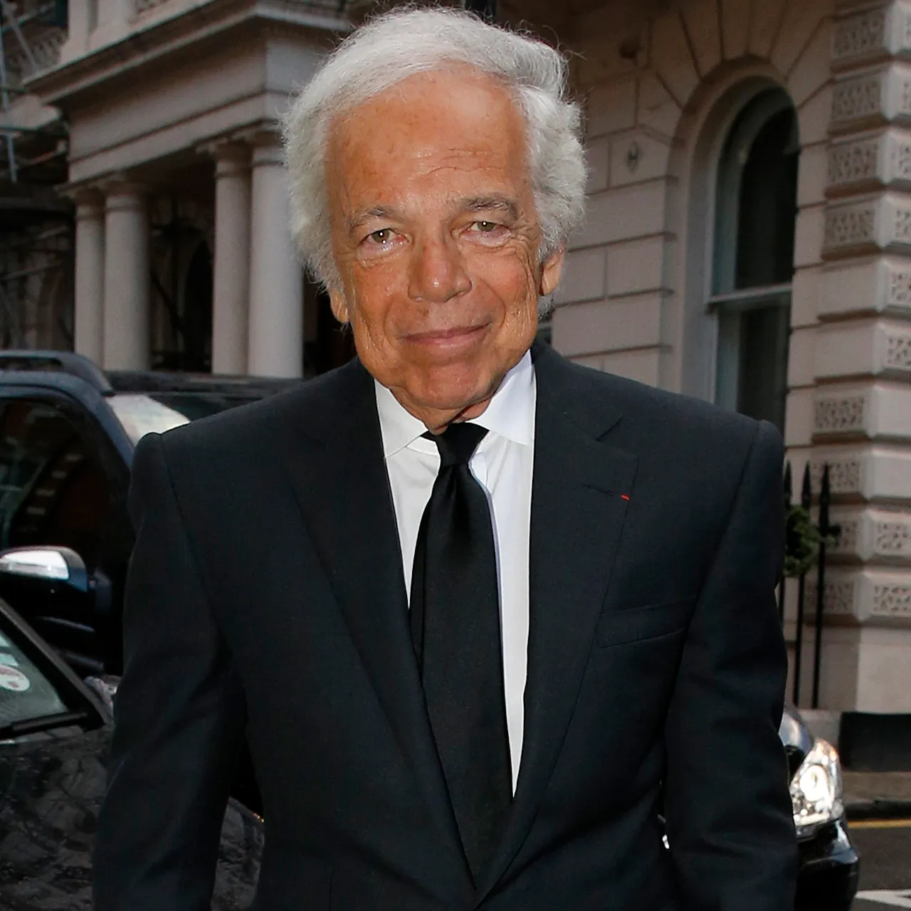

Ralph Lauren je americký módny návrhár , filantrop a miliardársky podnikateľ, najznámejší založením značky Ralph Lauren , globálneho multimiliardového podniku. V septembri 2015 odstúpil z funkcie generálneho riaditeľa spoločnosti, ale zostáva výkonným predsedom a hlavným kreatívnym riaditeľom . K máju 2025 sa jeho čistý majetok odhaduje na 11,9 miliardy USD.
Lauren sa narodila 14. októbra 1939 v Bronxe v štáte New York aškenázskym židovským prisťahovalcom Friede Lifshitzovej ( rodenej Cutlerovej) a Frankovi Lifshitzovi ( rodenému Efraimovi Lifshitzovi),umelcovi a maliarovi domov, z Pinsku v Bielorusku.Ako najmladší zo štyroch súrodencov má dvoch bratov a jednu sestru. Vo veku 16 rokov si on a jeho brat George Poitras Lauren legálne zmenili priezvisko z Lifshitz na Lauren kvôli šikanovaniu v škole.Toto meno si vybral podľa svojho staršieho brata Jerryho Laurena, ktorý ho prvýkrát vybral po tom, čo zažil šikanovanie v americkom letectve.
Lauren navštevoval dennú školu, potom Manhattan Talmudical Academy a nakoniec v roku 1957 ukončil štúdium na DeWitt Clinton High School.Navštevoval Baruch College na Mestskej univerzite v New Yorku (CUNY), kde študoval obchod, hoci po dvoch rokoch štúdium zanechal. Bol jedným z niekoľkých dizajnérskych lídrov vychovaných v židovskej komunite v Bronxe, spolu s Calvinom Kleinom a Robertom Denningom.